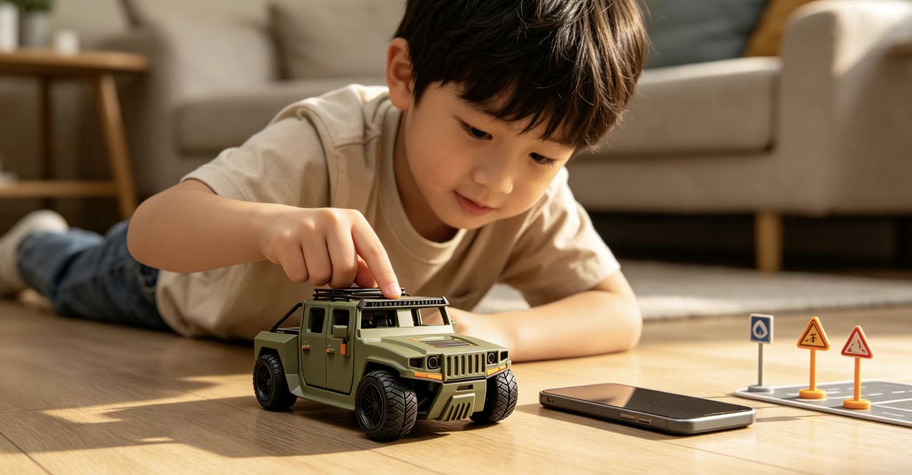
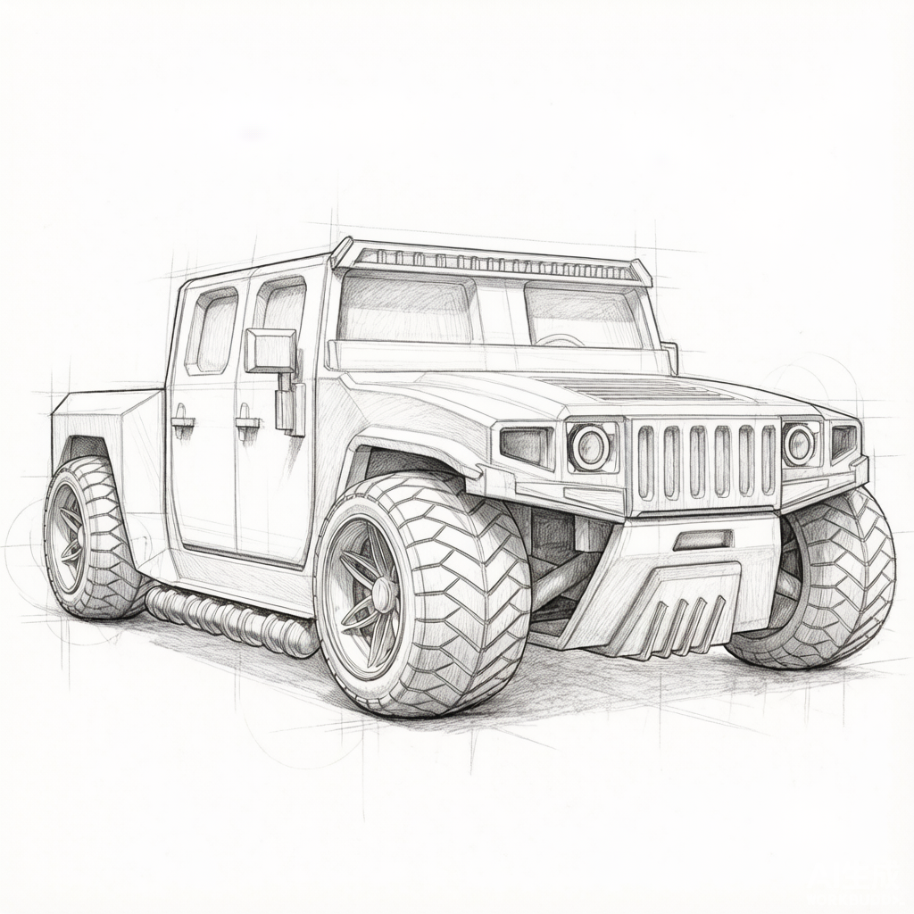
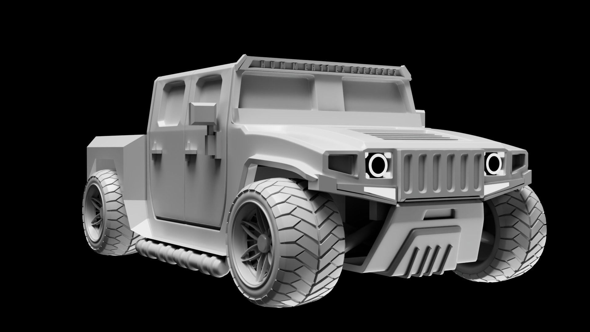
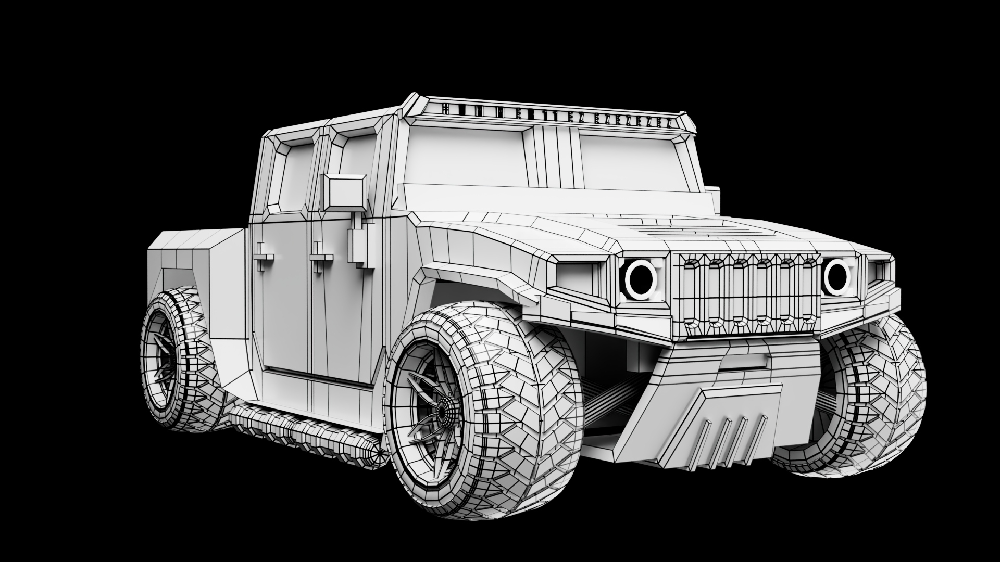
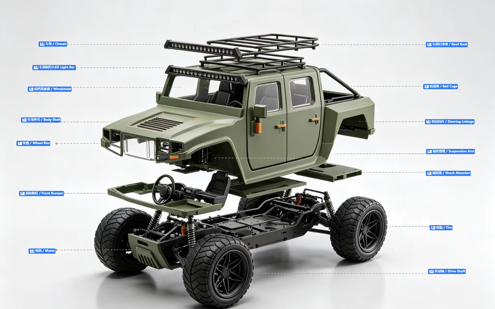

04 / Off-road Toy
越野车玩具
一款面向 3 岁以上儿童与模型收藏者的仿真越野车玩具。它脱胎于我的载具设计母本，但问题被重新定义：不是造一台能开的车，而是造一台"拿起来就想玩、放下来想收藏"的玩具。

01 / 项目目的
越野车玩具，要么太"玩具"要么太"模型"
- 痛点：市面越野车玩具两类——卡通小车缺可玩细节，高端静态合金只能看不能玩；缺「高细节 + 可玩 + 安全」交集。
- 项目目的：造一台「拿起来想玩、放下来想收藏」的玩具，经得起凑近看、也经得起孩子摔。
8
位家长 / 孩子访谈
75%
家长重视耐摔
63%
孩子重视可动细节
60%
家长愿为仿真细节溢价
02 / 用户调研
从"能看"到"能玩"的三条标准
- 方法：家长与孩子访谈 + 拆解 Hot Wheels/多美卡/双鹰/星辉等竞品。
- 洞察：玩具真正被在意的——能不能摔（安全耐造）、能不能动（车门/悬挂可玩）、像不像真的（仿真细节）。
- 方向：安全（圆角·无毒 ABS/TPR·无易脱落小件）｜可玩（开车门/尾门·弹性悬挂·顺滑滚动）｜仿真（比例准·分色清·材质对比）。

"它不用真的能跑，但要让我觉得它随时能跑。"
用户访谈 · 6 岁男孩03 / 概念方案
三个设计方向
- 发散：围绕「仿真、可玩、安全」三关键词的三种产品策略。
- 取舍：A 纯静态收藏模型（可玩性过低放弃）｜C 遥控竞技款（偏离核心人群放弃）｜B 可动可玩仿真玩具（保留：细节与可玩兼得·受众更广）。
方案 A · 纯静态收藏模型
极致细节，完全不可动。但孩子很快失去兴趣，可玩性过低。
放弃原因：目标人群（儿童）缺乏把玩动力
方案 B · 可动可玩仿真玩具（最终）
仿真比例 + 可开车门 / 尾门 + 弹性悬挂 + 安全材质。兼顾细节与把玩。
保留原因：细节与可玩兼得，受众更广
方案 C · 遥控竞技款
可玩性高，但成本高、受众窄，且失去"仿真把玩"的安静气质。
放弃原因：偏离核心人群（低龄儿童 + 收藏者）

04 / 设计迭代
从载具母本到玩具比例
- 素模/母本验证：以个人载具设计为母本（见素模与线框），重点调三处。
- 纠偏：放大轮胎占比与离地间隙凸显越野感；圆角化所有边角满足安全；简化复杂曲面为可开模分件保量产；四门开合/弹性悬挂/卡扣配件定型。


05 / 最终方案
高细节、可玩、安全
- 形态：1:18 仿真比例，橄榄绿配橙；四门可开·尾门上掀；前桥弹性悬挂；无毒 ABS + TPR 软质轮胎；全圆角；车顶行李架/探照灯卡扣式配件。
- 要点：仿真比例（1:18·分色清·材质对比） / 可动（四门·尾门·弹性悬挂） / 安全（无毒·全圆角·适龄 3+） / 模块化配件（卡扣拆换）。
06 / 验证与沉淀
儿童与家长试用
- 测试：12 名 3–8 岁儿童与陪同类玩，收集偏好与安全反馈。
- 结果：喜好度 4.5/5 · 92% 家长认可安全 · 83% 孩子反复把玩车门/悬挂（详见数据卡）。
- 沉淀/优化：放宽行李架卡扣公差，提升低龄儿童自主拆装。
4.5/5
整体喜好度
92%
家长认可安全性
83%
孩子反复把玩车门 / 悬挂
1
优化点：卡扣公差
下一轮优化：放宽行李架卡扣公差，提升低龄儿童自主拆装体验。
3D Explorer
可交互 3D 模型
拖拽旋转查看这台越野车玩具的完整三维形态与分件结构。模型基于 Rhino / Maya 原始几何，真实比例、可开模分件与装配关系均在此呈现。
模型加载中…
🖱️ 拖拽旋转
仅旋转 · 可全角度查看
Exploded View
模型爆炸图与卖点分层
将车体按功能层级拆解，能够清晰看到外观设计、机械结构与可玩细节如何共同支撑产品定位：既能在货架上被一眼识别，又能在把玩中建立口碑与复购。

卖点分层
外观件（车壳、行李架、射灯）负责“第一眼购买欲”和展示价值；
底盘/悬挂负责“玩家口碑”与复购；
电子件决定“性能天花板”与升级空间。
可玩性设计
车门可开、引擎盖可开、射灯可亮、后斗可载物——这些“可动点”是玩具车区别于静态车模的核心，也是定价支撑。
售后与配件化
后视镜、保险杠、轮胎、减震器、车壳都是高频易损件，适合做成配件包/升级包，延长产品生命周期。